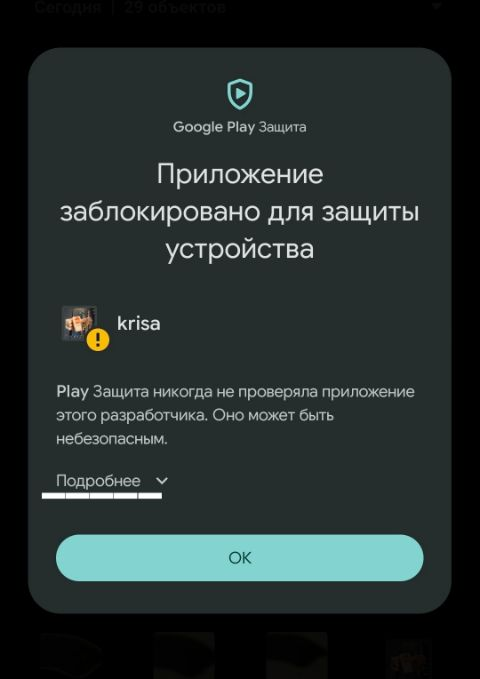
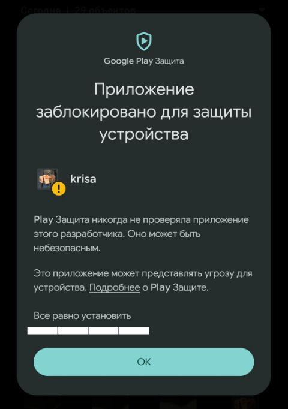
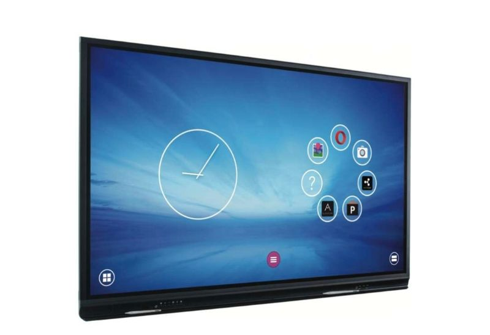
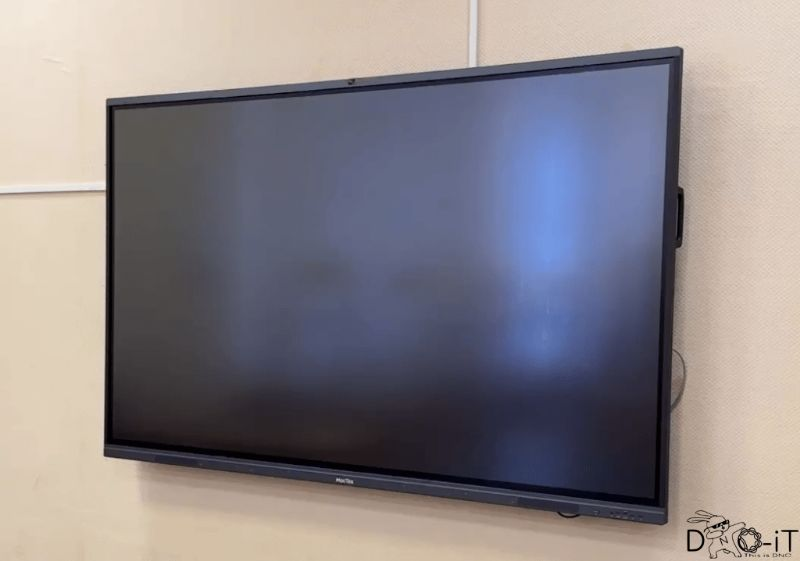

Гид по ИК-пульту для интерактивной доски IRBIS: скачать, установить, пользоваться
Файлы приложений скачиваются со страницы гида на сайте krisa: откройте гид в браузере телефона, раздел «Скачать».
krisa.apk в разделе «Скачать» и откройте файл: из уведомления о загрузке или из папки «Загрузки».

Почему так. krisa поставляется файлом, а не через Google Play, и подписана не магазином. Play Защита этого разработчика никогда не видела, поэтому предупреждает. Само приложение не просит доступа к интернету, контактам или файлам: оно использует только ИК-порт, USB-передатчик и звук.
Если кнопки «Всё равно установить» нет: откройте Google Play → значок профиля → «Play Защита» → шестерёнка → выключите «Проверять приложения с помощью Play Защиты». Установите krisa и сразу включите проверку обратно.
Встроенного ИК-порта у iPhone нет. Для управления доской нужен звуковой ИК-адаптер, который вставляется в разъём наушников (через переходник Lightning или USB-C на 3,5 мм) или сам подключается в USB-C.
Откройте веб-версию пульта в Safari → кнопка «Поделиться» → «На экран „Домой“». Пульт появится как приложение и будет работать со звуковым адаптером.
Apple не разрешает ставить приложения файлом прямо на телефоне. Файл krisa.ipa подписывается вашим Apple ID на компьютере (Windows или Mac) с помощью бесплатной программы Sideloadly:
krisa.ipa в разделе «Скачать» на компьютер.sideloadly.io. На Windows нужны ещё iTunes и iCloud — версии с сайта Apple, не из Microsoft Store.krisa.ipa в окно Sideloadly, введите свой Apple ID и нажмите «Start». Sideloadly спросит пароль Apple ID и установит krisa.С бесплатным Apple ID приложение работает 7 дней. Потом оно перестаёт открываться, и его нужно установить заново тем же способом, данные не пропадут. Так можно держать до 3 приложений одновременно. Вместо Sideloadly подойдёт AltStore (altstore.io): он сам продлевает подпись, когда компьютер и iPhone в одной Wi-Fi сети.
Приложение посылает ИК-коды пульта IRBIS #500202 (протокол NEC, 38 кГц). Оно работает только с досками IRBIS. Доски других марок, например MocTec, понимают другие коды и на krisa не отреагируют.


Как проверить: посмотрите на надпись на нижней рамке и на наклейку с моделью на задней стороне доски. Если там MocTec или другая марка, а не IRBIS, пульт работать не будет.
У Xiaomi, Redmi и POCO ИК-порт — маленькое тёмное глянцевое окошко на верхнем торце телефона, рядом с микрофоном. Держите телефон как обычный пульт: верхним торцом к доске, экраном к себе.
У USB-C передатчика сигнал выходит из прозрачного тёмного кончика — направляйте его на доску.
Не закрывайте окошко пальцем или чехлом: толстый чехол с закрытым верхним торцом гасит сигнал.
ИК-приёмник у таких досок обычно в нижней рамке, рядом с кнопками и индикатором питания — у IRBIS это левая часть нижней рамки. Ищите небольшое тёмное окошко или светящийся индикатор. Если не нашли — целитесь в нижнюю левую часть рамки.
> Встроенный ИК-порт. Если написано «не найден», нажмите [tx] и выберите USB-C передатчик или звуковой адаптер, а кнопка «Проверка» покажет, что видит телефон.POWER. Доска должна включиться или выключиться. Внизу экрана появится строка > tx POWER 0x807F18E7 [sent]: команда отправлена.| Кнопка | Что делает |
|---|---|
| POWER | Включает и выключает доску. |
| VOL- / VOL+ | Тише и громче. Удерживайте, чтобы менять громкость плавно. |
| MENU | Открывает меню настроек доски. |
| EMPY SCREEN | Гасит изображение, звук и доска остаются включены. Нажмите ещё раз, чтобы вернуть картинку. Название с опечаткой, как в базе кодов. |
| FREEZE | Останавливает картинку на экране (стоп-кадр). |
| INPUT | Выбор источника: встроенный Android, компьютер, HDMI. |
| J UP / J DOWN J LEFT / J RIGHT | Стрелки для перемещения по меню. Удерживайте, чтобы листать. |
| J OK | Подтверждает выбор в меню. |
Названия кнопок и коды взяты из базы IrCode Finder для пульта IRBIS #500202. Точное поведение EMPY SCREEN и FREEZE зависит от прошивки доски.
[sent] → команда не ушла. Нажмите [tx] → «Проверка» и выберите передатчик, который телефон видит.[sent] есть, но доска молчит → подойдите ближе, уберите всё между телефоном и доской, целитесь в нижнюю левую часть рамки.